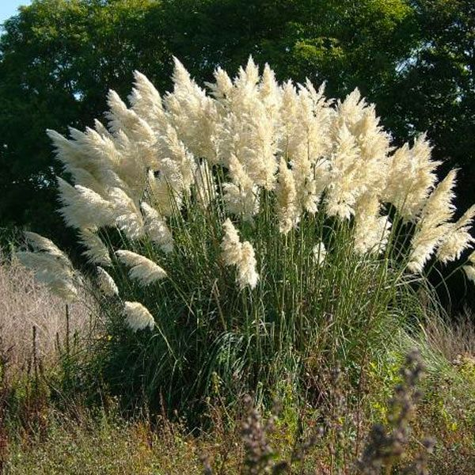

Cortadera (Cortaderia selloana)

- Familia: Poaceae (familia de las gramíneas).
- Tronco: no tiene un tronco en el sentido tradicional de los árboles. En cambio, desarrolla una base robusta y leñosa a partir de la cual surgen los tallos de flores. Esta base puede ser algo compacta y densa, actuando como un punto de crecimiento para las hojas y las inflorescencias.
- Corteza: La planta no tiene una corteza. La base de las hojas es fibrosa y puede estar cubierta de restos de hojas secas que se acumulan con el tiempo.
- Copa: está formada por un grupo denso de hojas largas y estrechas que se disponen en un rosetón. Las inflorescencias aparecen en lo alto de los tallos y le dan a la planta su característica apariencia de pluma o plumón. La forma de la planta es generalmente redondeada y espesa, con una estructura que puede alcanzar hasta 3 metros de altura.
- Hoja: son largas, estrechas y lineales, con bordes a menudo dentados. Pueden alcanzar hasta 2 metros de longitud y son de color verde a gris verdoso. Las hojas tienen una textura áspera y son dispuestas en un rosetón denso.
- Flor: se agrupan en grandes panículas o espigas que emergen de la parte superior de los tallos. Estas inflorescencias son grandes, plumosas y de color blanco, plateado o beige. Las flores son diminutas y menos notables en comparación con las espigas que forman.
- Fruto: son pequeños y secos, y se encuentran dentro de las espigas. Cada espiga contiene numerosos pequeños granos o semillas que son dispersados por el viento.
- Usos: se utiliza principalmente en jardinería ornamental debido a su imponente presencia y sus espectaculares inflorescencias. También se emplea en la creación de pantallas naturales o setos decorativos debido a su tamaño y densidad. En algunas culturas, las hojas secas se utilizan en la fabricación de artesanías y decoraciones.
- Floración: ocurre en late verano y otoño, cuando la planta desarrolla sus características inflorescencias plumosas. La floración puede durar varias semanas.
- Fructificacion: sigue a la floración, con la producción de pequeñas semillas que maduran en otoño. Las semillas son dispersadas por el viento, facilitando la propagación de la planta.
- Reproducción: se reproduce principalmente por semillas, que se dispersan con el viento. La planta también puede ser propagada por división de matas, donde se separan partes de la base de la planta para establecer nuevas plantas.
Hoja
Flor